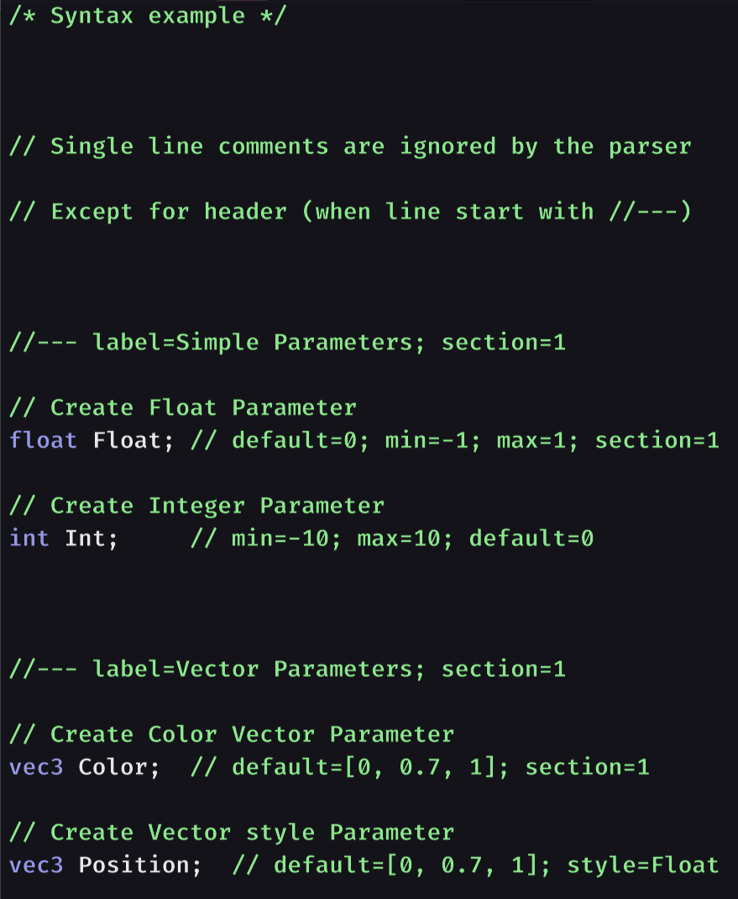
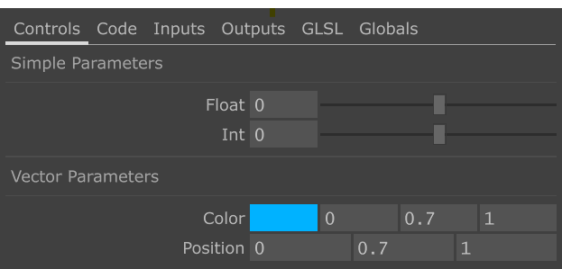
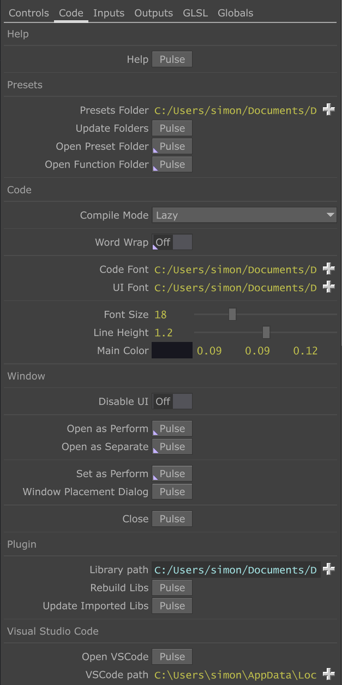
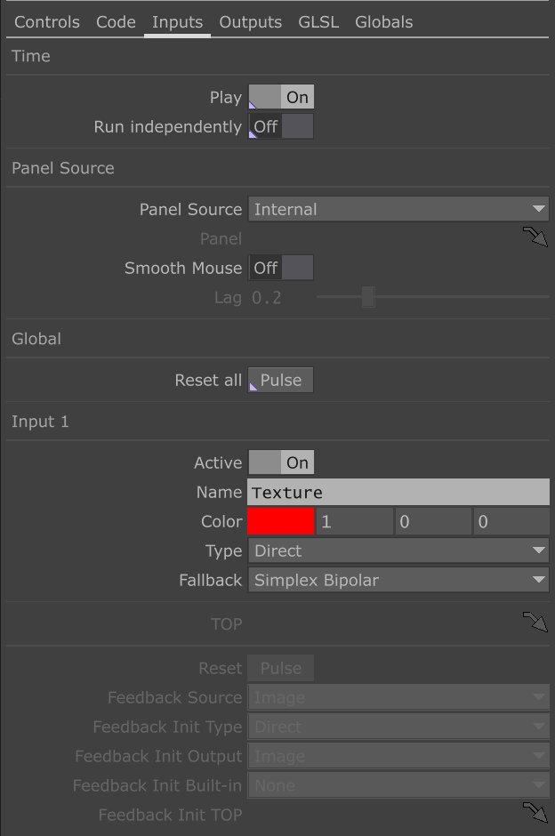
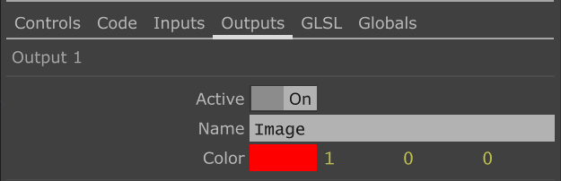
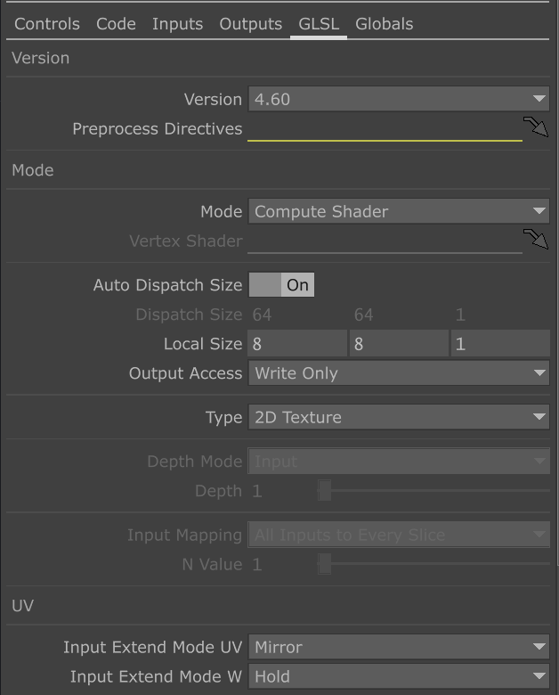
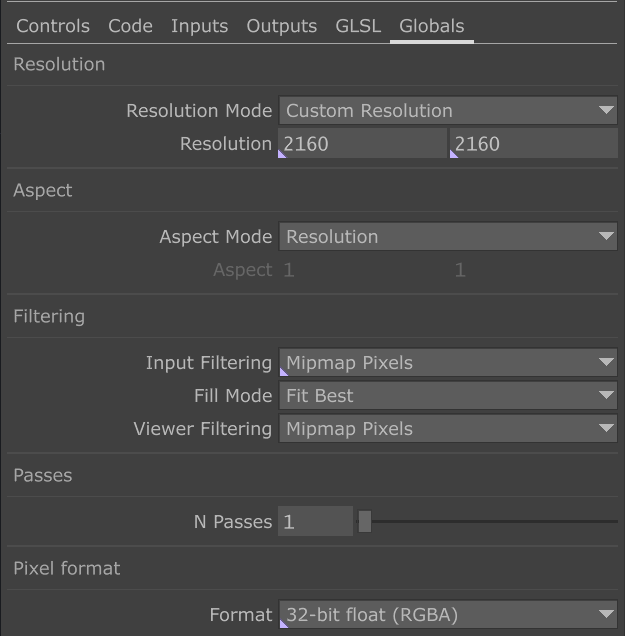

Parameters
Pixel-Wrangle provides many parameters divided into several pages.
Each of the pages manages different aspects of Pixel Wrangle. Modifications made are saved with your presets. It is possible to make modifications through the Component Editor but I strongly advise against it, for the sake of compatibility with future versions of Pixel Wrangle
Here is a general overview:
-
The 'Controls' page: These are all the parameters related to the variables you have declared in the 'Inputs' panel. These parameters are added dynamically based on your shader. You can also make modifications from the Pixel Wrangle instance's 'Component Editor' if you wish, although it is best to do so explicitly in the 'Inputs' panel via properties.
-
The 'Code' page: This is where you can adjust the main features specific to Pixel Wrangle such as paths to the main library, to Visual Studio Code, UI appearance-related parameters, etc.
-
The 'Inputs' page: You define the shader's inputs here such as their name, different modes (Direct, Feedback, Custom), and other options related to your shader's inputs
-
The 'Outputs' page: This is where you define the shader's outputs, their name, etc.
-
The 'GLSL' page: Parameters related to the underlying GLSL TOP. Such as the mode, GLSL version, etc.
-
The 'Globals' page: Global parameters of the shader, such as output resolution, bit depth, etc.
Controls page

As mentioned previously, the 'Controls' page represents all variable declarations made in the 'Inputs' panel. You can modify the form of this control panel and each of the parameters through properties added as comments in your declarations (such as min, max, default, etc.) If you want to use the Component Editor to make changes to a parameter, you can, but generally I do not recommend it for the sake of portability of your presets in future versions of Pixel Wrangle. It is also worth noting that any changes made by the Component Editor will be overwritten if you subsequently modify the properties of this parameter in the Inputs panel. You will find here some examples for adding parameters to the page through the 'Inputs' panel.
Page Code

The Code page contains all options related to Pixel Wrangle, here is the list of available parameters:
| Parameter Label | Description |
|---|---|
| Help | Open online help |
| Presets Folder | Path to the Presets folder |
| Update Folders | Force update of the Presets folders content |
| Open Presets Folder | Open the Presets folder with the file explorer of your system, [CTRL] + O |
| Open Functions Folder | Open the Functions folder with the file explorer of your system, [CTRL] + [SHIFT] + O |
| Compile Mode | Lazy: recompile the shader when the focus of the code editor panel is lost, Continuous: recompile after each modification |
| Word Wrap | Automatically fold code over multiple lines when it exceeds the panel size |
| Code Font | Set the font used for the code |
| UI Font | Set the font used for the UI |
| Font Size | Adjust the global font size |
| Line height | Set the line height |
| Main Color | Set the main background color |
| Disable UI | Completely disable the UI |
| Open as Perform | Open the window in Perform mode (without the Touchdesigner UI), [F1] to open, [ESC] to close |
| Open as Separate | Open the window in Separate mode (the Touchdesigner UI remains accessible), [CTRL] + [ENTER] to open, [ESC] to close |
| Set as Perform | Set the Pixel Wrangle instance as the default window in Perform mode, [CTRL] + [F1] to activate |
| Window Placement Dialog | Open the Touchdesigner Perform windows management panel |
| Close | Close active windows of the Pixel Wrangle instance |
| Library Path | Pixel Wrangle root folder |
| Rebuild Libs | Runs the parsing script on the Function libraries located in \ |
| Update Imported Libs | Imports compatible libraries to the root of the current project in a baseCOMP located at path /libs |
Inputs page

The 'Inputs' page includes all parameters related to shader inputs.
Below is a complete list of available parameters:
| Parameter Label | Description |
|---|---|
| Play | Enable time dependency (cook every frame) |
| Run independently | Make time independent from global start-stop |
| Panel Source | Select reference panel for mouse interactions |
| Panel CHOP | If Panel Source is 'Custom', reference the PanelCOMP used for mouse interactions |
| Smooth Mouse | Enable lag on mouse movements to smooth pointer trajectories |
| Lag | Specify smoothing in seconds for mouse lag |
| Reset All | Reset all inputs that are in 'Feedback' mode |
| Active | Enable corresponding shader input |
| Name | Name of input (displayed on hover) |
| Color | Set color of corresponding input |
| Type | Direct: Direct connection of an OP to the input, Feedback: Retrieve signal from one of the shader outputs (previous frame), Custom: Custom TOP |
| Fallback | TOP used when input is not connected or not compliant |
| TOP | If Type is 'Custom', Path of TOP to use for corresponding input |
| Reset | If Type is 'Feedback', Resets corresponding input |
| Feedback Source | If Type is 'Feedback', Selects selected shader output |
| Feedback Init Type | If Type is 'Feedback', select the initialization signal type |
| Feedback Init Output | If Type is 'Feedback' and Feedback Init Type is 'Output', use the selected shader output as initialization signal |
| Feedback Init Built-in | If Type is 'Feedback' and Feedback Init Type is 'Built-in', use the selected built-in as initialization signal |
| Feedback Init Built-in | If Type is 'Feedback' and Feedback Init Type is 'Custom', use the indicated TOP as initialization signal |
Page Outputs

The 'Outputs' page groups all parameters related to the shader inputs.
Below you will find the complete list of available parameters:
| Parameter Label | Description |
|---|---|
| Active | Activates the corresponding shader input |
| Name | Name of the input (displayed when hovering over the input) |
| Color | Set the color of the corresponding input |
Page GLSL

The GLSL page groups all the parameters available on the GLSL page of a GLSL TOP. The easiest is to refer to the Touchdesigner documentation which will provide a complete list of adjustable options. The only parameter that differs is 'Local Size' available in 'Compute' mode. It defines the thread size (the number of pixels simultaneously sent to the GPU for processing by the shader). Usually this parameter is declared in code in the shader, but here you can define it in a TD parameter directly.
Page Globals

The Global page defines global parameters for Pixel Wrangle, such as resolution, aspect ratio, etc. These parameters correspond to those that you might find on any TOP (on the Common page) in Touchdesigner. You can refer to the documentation of a GLSL TOP for more information.